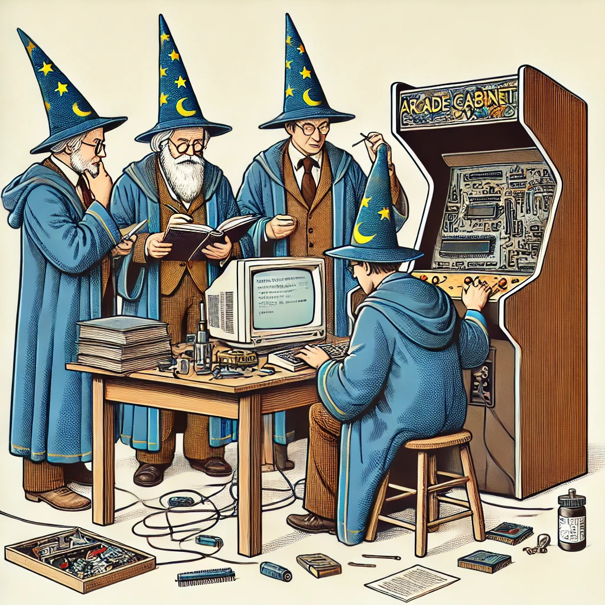
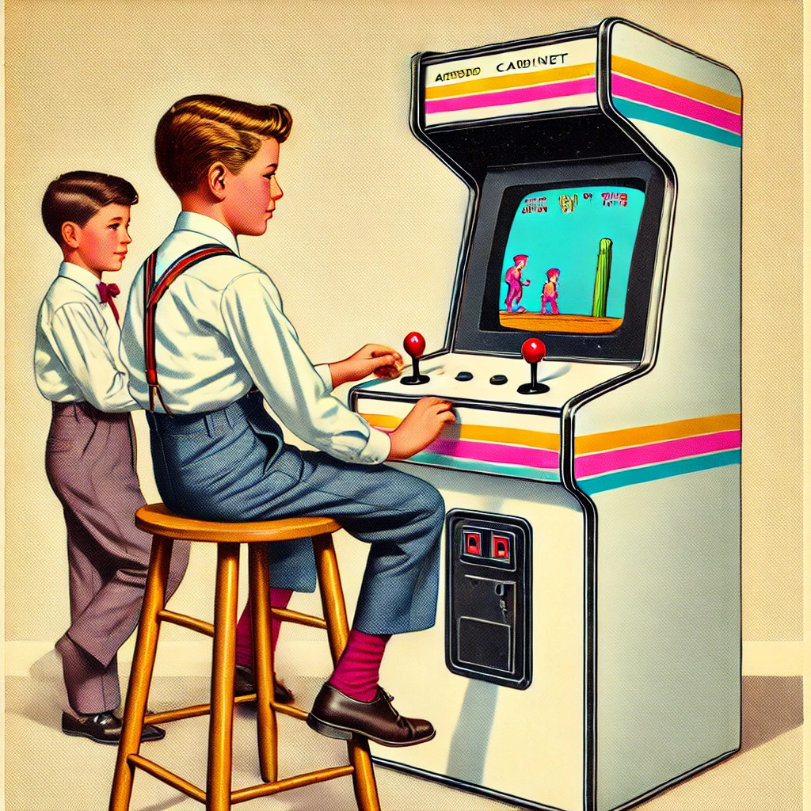
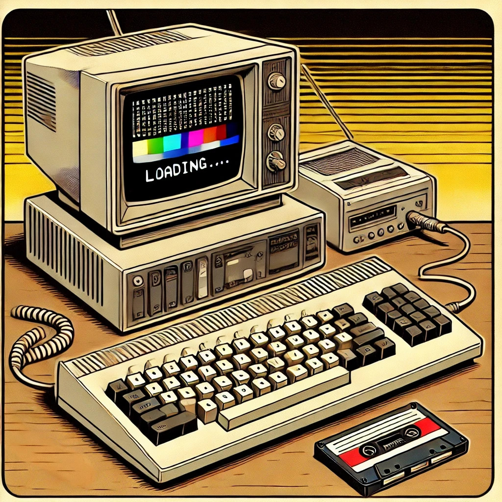

Are ye olde enough to be retro? Do you remember the classic 1980s arcade games like
Pac-Man, Space Invaders, and Donkey Kong?
These coin-operated arcade machines were only popular for a decade or two, but represent an important era when inventive game-play
and ingenious programming launched us into distant worlds created with incredibly limited hardware (by today's standards).
The original version of
Pac-Man used a ~3 MHz processor, 16 KB ROM, and 3 KB of RAM.
Very roughly, a modern PC might have a CPU that runs a thousand times faster, with four million times as much RAM!
And that's not to mention countless other improvements in motherboard and CPU design over the years.
Sadly, these old machines will eventually fail. Fortunately great wizards and techno-historians have painstakingly documented or
reverse-engineered the circuit designs and ROMs, allowing modern PCs (and other devices) to emulate old hardware. Thus
ensuring our history is not lost forever!

What is MAME?
According to the official MAME website,
MAME was originally an abbreviation of Multiple Arcade Machine Emulator.
These days, it has become a multi-purpose emulation framework for many other vintage devices.
MAME is constantly evolving. Newer versions emulate newer hardware, but require significant system resources.
Unlike most software, running the latest version of MAME is a huge mistake! Emulating old pre-internet hardware isn't a major security risk;
you don't need the latest updates to be safe. Much older versions of MAME are perfect for old hardware.
With MAME 0.37b11, even a 30 year old desktop PC (like a 266 MHz Pentium III with 16 MB of RAM) would be up to the job!
Or, with MAME4droid, old Android phones (like the Samsung Galaxy S2, released in 2011) can be transformed from a useless
bit of junk into a powerful handheld gaming system that would have been unimaginable in the 1980s! Of course, you'd probably want to get
a USB OTG (on-the-go) cable and connect your favourite USB gamepad or joystick.
While you can run MAME by itself, there are many other projects that use MAME as a backend, such as:
RetroArch: A front-end (i.e. a user interface) application, providing access to various emulators and media players.
Batocera.linux: A live OS that can be installed on a USB stick or hard drive. It requires no knowledge of Linux. You simply need to copy the required files (such as game ROMs, BIOSes, etc.) to it.
KnoppiXMAME: Another live OS that provides MAME emulation, and must be installed on a bootable CD.
MAME4droid: An Android app that provides a MAME front-end.
Check out the links below, and rescue an old PC (or phone) today!
Not Legal Advice
Copyright, trademark, and patent laws vary wildly across the globe. So nothing here is legal advice. But, in general, it
seems to be perfectly legal to download and use hardware emulators. For example, MAME is a well-respected project
that provides free arcade machine hardware emulators.
Acquiring game ROM data is a much greyer legal area. In general, copyright laws prohibit unauthorised copying
of game ROMs. However, in some jurisdictions the right to make personal backups or format-shift legitimately acquired media
is protected in law. And some regions are more relaxed about non-profit educational use, or historical archiving.
I will not provide any links to download MAME ROM sets or copyrighted games. Fortunately, there are a few
modern free and open-source games that are a great way to demonstrate MAME's hardware emulation without any legal issues.
Not Legal Advice (from ChatGPT)
I thought it strange that hardware ROMs can be copied and emulated freely, yet game ROMs are subject to stricter copyright.
I asked ChatGPT-4o why, and got a very plausible explanation:
Click for ChatGPT-4o's response...
Your question delves into a nuanced area of intellectual property law. The legality of reverse-engineering and copying game ROMs hinges on several factors,
including jurisdiction, intent, and the specific protections applied to different components of arcade systems.
1. Reverse-Engineering and Copyright
Reverse-engineering is generally legal in many jurisdictions under specific conditions, such as:
Fair Use (or Fair Dealing in the UK): Reverse-engineering for purposes like research, education, or interoperability may fall under fair use/dealing exceptions.
Preservation and Interoperability: Projects like MAME argue their work is for archival or compatibility purposes, ensuring that old hardware designs aren't lost to history.
Non-Copying of Protected Works: When contributors reverse-engineer arcade systems, they are recreating the hardware's functionality without directly copying copyrighted blueprints or schematics. This does not necessarily violate copyright law because:
Functional aspects (e.g., hardware design) are often protected by patents, not copyright.
Patents typically expire after 20 years, meaning many original arcade hardware designs are no longer protected.
2. Why ROMs Are Treated Differently
Game ROMs, by contrast, are subject to copyright because:
Creative Expression: Unlike hardware, the data stored in ROMs (game code, graphics, sounds) represents the creative and intellectual work of developers. Copyright law protects this kind of creative content.
Direct Copying: Extracting or distributing game ROMs involves duplicating the original copyrighted work, which is explicitly prohibited without permission.
3. MAME’s Legal Stance
The MAME project itself adheres to certain principles to avoid legal issues:
Focus on Emulation: MAME emulates hardware but does not distribute ROMs, ensuring its legality in most jurisdictions.
Use of Public Domain or Licensed ROMs: MAME officially supports ROMs that are either in the public domain, explicitly licensed for free use, or used with permission.
4. Why Is Reverse-Engineering Sometimes Permitted?
Courts have historically allowed reverse-engineering for purposes like:
Interoperability: Reverse-engineering is often allowed to make new software or hardware compatible with old systems (e.g., designing emulators).
Preservation: Projects focused on cultural or historical preservation (like MAME) may be seen more favourably than those aiming to profit.
5. Jurisdictional Differences
Laws vary by region. For example:
United States: The Digital Millennium Copyright Act (DMCA) includes provisions allowing reverse-engineering in specific circumstances, but distributing ROMs is still prohibited.
European Union and UK: Similar protections exist for reverse-engineering for interoperability, but unauthorised copying of ROMs remains illegal.
Japan: Copyright law is stricter, with fewer allowances for reverse-engineering.
Summary
Reverse-engineering arcade hardware generally does not infringe copyright law because it focuses on replicating functional designs that may no longer be protected. Game ROMs, however, are copyrighted as creative works, and copying them without permission is usually illegal.
MAME walks a fine line by focusing on emulation and explicitly avoiding unauthorised ROM distribution. This approach allows the project to operate legally while contributing to the preservation of gaming history.

MAME ROM Managers
MAME game ROMs are essentially .ZIP or .7z files.
A major source of newbie confusion is that MAME versions are neither backwards- nor forwards-compatible! For example, if your game ROMs were designed to
work with MAME 0.139u1, they will be unlikely to work with any other MAME version.
Fortunately, you can rebuild your game ROMs to work with whichever MAME version you like by using a ROM manager.
Each version of MAME comes with a corresponding .DAT file. This contains the information a ROM manager needs; to know how to rebuild
your ROMs for that particular MAME version. (You can freely download any .DAT files you need from the MAME website.)
MAME ROM organisation
Another source of confusion is in the three different ways that a MAME ROM set (your game collection) can be organised:
Since many arcade machines share similar hardware, many game ROMs share identical files (within the zipped image).
To save disk space, a ROM manager can merge or split your ROM set, to reduce file duplication.
The most intuitive way to organise your ROM set is the non-merged option. This requires the most disk space,
but ensures that every game ROM file is completely independent; neither relying on nor being required by any other ROM file.
This makes it possible to copy, move, or delete individual game ROMs without affecting any others.
In summary:
Merged: You can save disk space if you merge all of your individual ROMs into a single zipped file.
This ensures that there is only one copy of any file in your ROM/ZIP, which is shared by all the games that need it.
However, you can't simply add or remove individual games without rebuilding the entire ROM set.
Split: You can split your ROM set, so that each game has a 'parent' version, and 'child' (regional) variations.
You can delete any child variants you don't need, but the parent ROM is required by every child ROM.
Non-merged: A non-merged ROM set is simple. Every game is self-contained within a separate ROM file.
This is not efficient in terms of disk space if you have a large ROM set. However: you can delete any game or variant ROM file, without affecting any other;
you can copy individual game ROM files independently.
Unless you are a treasure-hoarding, one-eyed, peg-legged, grog-supper with a suspiciously large ROM set, I would suggest choosing the non-merged option.
8-bit Micros
Maybe you had an 8-bit micro-computer, such as a ZX Spectrum, Commodore 64, or Amstrad CPC, and played games like Jet Set Willy,
Arkanoid, Chase HQ, and Ikari Warriors? Maybe you played Ian Bond's text-based adventure games, like Island and The Base, or
used PAW (the Professional Adventure Writer) or GAC (the Graphic Adventure Creator) to create your own adventures?
The limited simplicity of these old computers made programming accessible; a generation of kids learnt to code!
In my mind, the Amstrad CPC6128 was the pinnacle of 8-bit computing (and not only because I owned one). It had a built-in
disc drive, making it quick, easy, and reliable to save and load your own programs. The instruction manual was a work of art.
It explained, in clear simple terms how to use a home computer. A reference section listed every BASIC command.
The appendices listed code for simple games and databases. It ran CPM; it was MIDI compatible; you could attach a mouse, joystick, stereo,
printer, EEPROMS, or the classic Multiface-II which allowed you to freeze execution, and use a hex-editor to directly modify
any part of the memory! You could peek and poke without limits!
Again, there are several emulators that mimic that classic 8-bit experience. These home computers don't even need
copyrighted games to be fun. Most had a BASIC interpreter built-in, so you can fire one up and start writing your own code right now,
just like in the good old days!

What is Batocera.linux?
Batocera is a free and open-source retro-gaming GNU/Linux distribution. It requires no knowledge of Linux.
Essentially, you simply write the Batocera image file to a USB stick (e.g. with Balena Etcher), then copy your game ROMs onto it.
That USB stick should then boot on any PC, providing a portable gaming system!
As well as being a front-end for MAME, Batocera can emulate many 8-bit home computers from the Amstrad CPC
to the ZX81; and games consoles from the 1970s Atari 2600 to the
Sega MegaDrive, SNES, and beyond.
I had problems booting certain versions of Batocera on certain PCs. However, Batocera v5.18 has booted reliably
on every PC I could find: old or new; 32 or 64 bit!
With a Linux bootloader (like GRUB), Batocera can also be installed on a hard drive, alongside Windows or other Linux OSes in a multi-boot setup.
N.B. On the 4th October 2020, Batocera changed the way that versions were numbered.
After Batocera v.5.27 came a version known as both Batocera v5.27.2 and Batocera v28.
Since then, version numbers have continued incrementally: Batocera v29, v30, v31, etc.
Installing Batocera v5.18 on a USB stick:
Download the Batocera v5.18.img.gz gzipped image file.
Extract the .img file from the .img.gz file. (TIP: In Windows, use 7-Zip.)
Use Balena Etcher to write the .img file to a USB stick.
Boot the USB stick and wait for the setup to finish. Then, safely shut down or reboot.
The USB stick will now have two primary partitions with the following details:
Batocera USB Partitions
Label
Name
Filesystem
BATOCERA
vfat
FAT32
SHARE
userdata
ext4
Copy your game ROMs (and emulator BIOSes) to the SHARE partition.
Batocera's SHARE partition:
The ext4 SHARE partition contains various (intuitively named) sub-directories, where you must
copy your game ROMs, and any other files (e.g. BIOS files for emulators).
Windows doesn't support ext4 filesystems. So you will need to use another Linux OS to access the SHARE partition.
If you aren't familiar with Linux, I suggest installing
Slax
on another USB stick. It requires no configuration or Linux experience. Simply boot the Slax USB, open the file manager, and copy your files.
Installing Batocera on a hard disk
To install Batocera on a hard drive, you can clone the partitions from a USB stick installation
(e.g. using GParted).
To multi-boot Batocera alongside other OSes, you will need a Linux boot manager, such as the fairly ubiquitous GRUB.
I suggest installing a minimalist installation of Arch Linux with GRUB. Then you can use Arch to
configure GRUB and add a boot entry for Batocera.